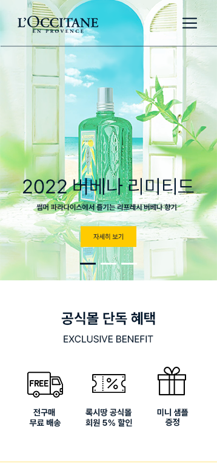
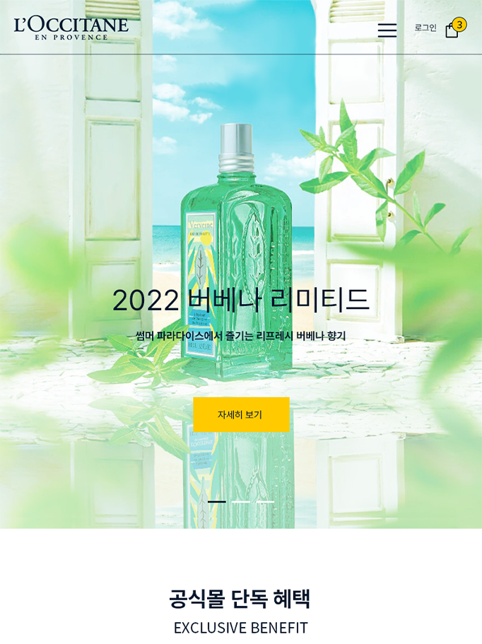
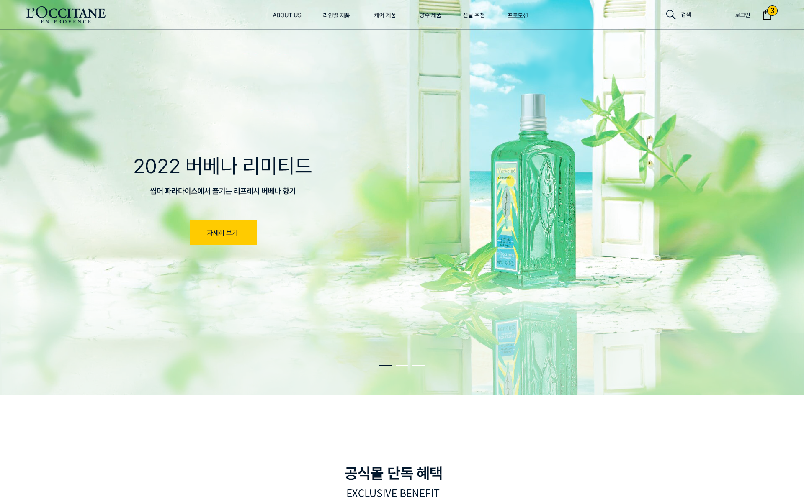

L'OCCITANE
반응형 웹 사이트
2022.07.01 ~ 2022.07.28
개인 작업 (100%)
- #Responsive
- #HTML5
- #CSS3
- #JavaScript
- #jQuery



반응형 웹 사이트
2022.07.01 ~ 2022.07.28
개인 작업 (100%)


다양한 제품의 수많은 정보들이 카테고리와 이미지들로 나열된 채 제공되어 세심히 찾아봐야 하는 기존 웹사이트에서, 보다 간결하고 정리된 형태로 록시땅의 제품을 친절하게 보여주는 홈페이지로 리디자인 한다.
100%
Role : 리디자인 & 퍼블리싱
브랜드 특성상 다수의 카테고리 형성이 불가피 할 수 있으나, 웹 사이트 상단을 다 채울 만큼의 카테고리 제공은 불 필요 한 것 같다.
메인에 있는 제품의 정보들은 카테고리로 가면 또 볼 수 있는 정보들 즉, 중복되는 정보들인 경우가 많았다.
간격이 너무 좁거나 너무 ㅁ넓거나 하여 일관되지 않다.
겹치는 키워드 별로 묶어서 카테고리 수를 줄이고, 소비자 전달 중요도가 높은 정보는 메인에서, 그 외 자세한 정보는 페이지로 넘어가서 확인 할 수 있도록 한다.
들쑥날쑥한 화면 상의 크기 및 구조들을 효과적으로 수정하고, 특히 메인에서 노출되었으면 하는 콘텐츠를 선정해 새로이 배치한다.
반응형 웹사이트였기 때무에 화면 크기에 따라 레이아웃 배치가 바뀌어야 했는데, 처음이나 그런지 배치 구조 설정에서 다수의 시행착오를 겪었다.
제일 어려웠던 건 어디가 잘못 되었는지 찾지 못했던 것이었다.
예를
들면, flex와 grid를 쓰는 경우 이미지와 텍스트들의 위치가 원하는
대로 되지 않아, 적용이 안 된 코드가 어떤 부분인지 개발자 도구를
통해 찾아보거나 그래도 안되면 구조에서부터 다시 시작 해야했다.
우선 처음 이 사이트를 리디자인 할 때, 각종 효과보다는 구조를 생각한대로 제작하고 유동적인 반응형 또한 제대로 구현하는 것에 집중하여 작업할 수 있도록 목표를 세웠다.
다만 작업하면서 생기는 오류들을 수정해나갈 때마다 더 엉망이 되어가는 기분이었지만, 천천히 하더라도 될 때까지 끝까지 해보려고 노력했다. 결론적으로 다소 시간은 좀 많이 걸렸지만, 원하는 이미지대로 웹 사이트를 구현할 수 있었다.
본격적으로 디자인과 퍼블리싱을 한 첫 프로젝트여서 그런지 더 헤멨고, 여러 번 새로 다시 하면 할 수록 더 헷갈리고 어렵다는 생각이 들었다. 하지만 여러 번 하다보니 반응형에 대해서 좀 더 이해할 수 있었던 것 같다. 디자인한 이미지 상으로는 손쉬워 보였던 구성이 실제로는 생각만큼 안될 때, 문제가 된 부분을 다시 찾아보고 모르겠는 부분들은 검색해보면서 해결방법을 찾았다.
또한 이번 프로젝트를 하면서 제품 브랜드의 웹사이트는 어떻게 구성해야 소비자가 보다 한눈에 쉽게 인지할 수 있을 것인지 고민해 볼수 있어서 좋았다. 특히 록시땅은 브랜드 특성상 정말 많은 콘텐츠가 있는 사이트 였는데, 기존의 웹 사이트를 살피면서도 사용자 입장에서 어떤 부분이 개선되면 좋을 지 계속 생각하면서 리디자인 했던 것 같다. 카테고리를 나누는 방식이나 메인페이지에서 주로 보여줘야 할 부분 들, 불편하다고 느낀 부분들은 다른 브랜드를 서치해 참고하거나 적용해보곤 했던 과정들이 좋은 경험이었다고 생각한다.